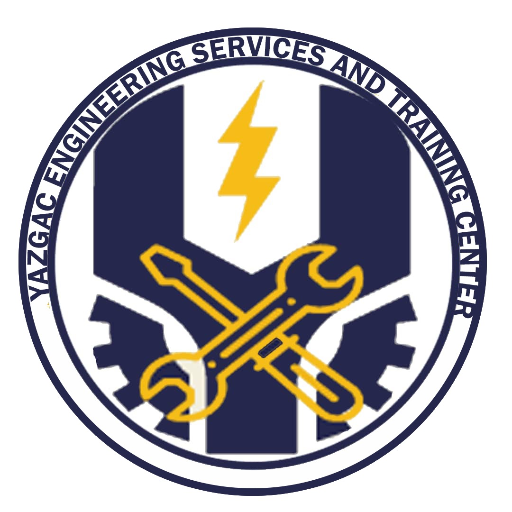

Overview
Purpose
The purpose of this site is to educate my audience on the services my Rafting company offers
Audience
The targeted audience for a rafting company typically includes a diverse range of individuals with varying interests, preferences, and motivations. Here are several groups that might constitute the target audience for a rafting company: Adventure Enthusiasts: People seeking adrenaline-pumping activities are drawn to rafting for the excitement and challenge it offers. They enjoy the thrill of navigating through rapids and the unpredictability of river currents. Nature Lovers: Those who appreciate the outdoors and natural landscapes find rafting appealing for the opportunity to immerse themselves in stunning river settings and experience the beauty of nature firsthand. Families and Groups: Rafting companies often cater to families and groups of friends seeking bonding experiences. Family-friendly rafting trips provide a mix of adventure suitable for various age groups, fostering teamwork and creating memorable shared experiences. Thrill-Seekers: Individuals actively seeking exhilarating experiences are attracted to rafting due to the thrill of conquering rapids, the rush of water, and the physical challenge it presents. Outdoor Enthusiasts: People who enjoy outdoor activities like hiking, camping, and kayaking might be inclined to try rafting as it complements their interest in exploring different outdoor adventures. Sports and Fitness Enthusiasts: Rafting offers both a physical and mental challenge. People passionate about staying active and testing their physical abilities often find enjoyment in rafting while staying fit and engaged. Travelers and Adventure Seekers: Travelers exploring new destinations often seek unique experiences, and rafting presents an exciting adventure in diverse locations, attracting those with a thirst for exploration. Team Building Groups: Corporates and organizations often opt for rafting as part of team-building exercises due to its collaborative nature, requiring teamwork, communication, and trust among participants.
- Q1: Who might be interested in extreme rafting adventures?
- A1: Extreme sports enthusiasts seeking adrenaline-pumping experiences.
Branding
Website Logo
Style Guide
Color Palette
Primary Color: #396e94
Secondary Color: #e7c24f
Accent1 Color: #a43312
Accent2 Color: #381d2a
Palette URL: https://coolors.co/396e94-e7c24f-a43312-381d2a-aabd8c
Typography
Headings Example Font
Font Name: XYZ Font (Sans-serif)
Normal Text/Paragraph Example Font
Font Name: ABC Font (Serif)
Colored Callout Example Font
Font Name: Example Font (Sans-serif)
Navigation
Wireframes
Home Page Wireframe

About Us Page Wireframe

Conclusion
We hope to hear from you soon or visit our site